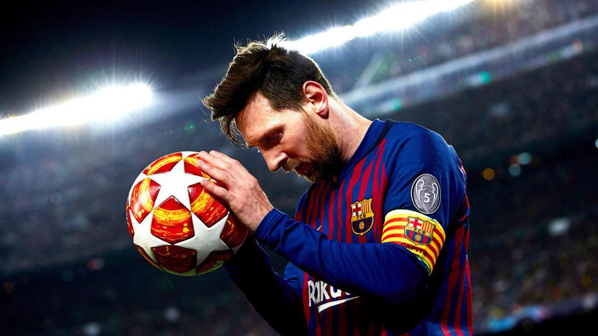
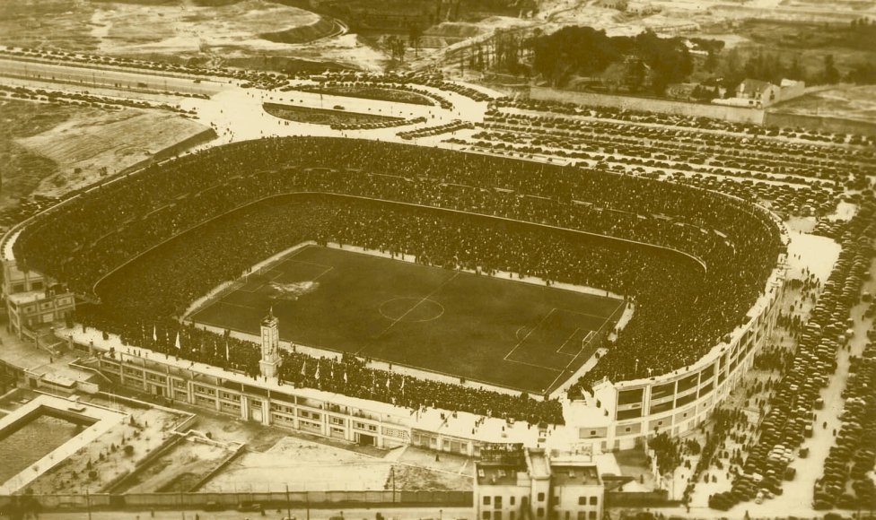
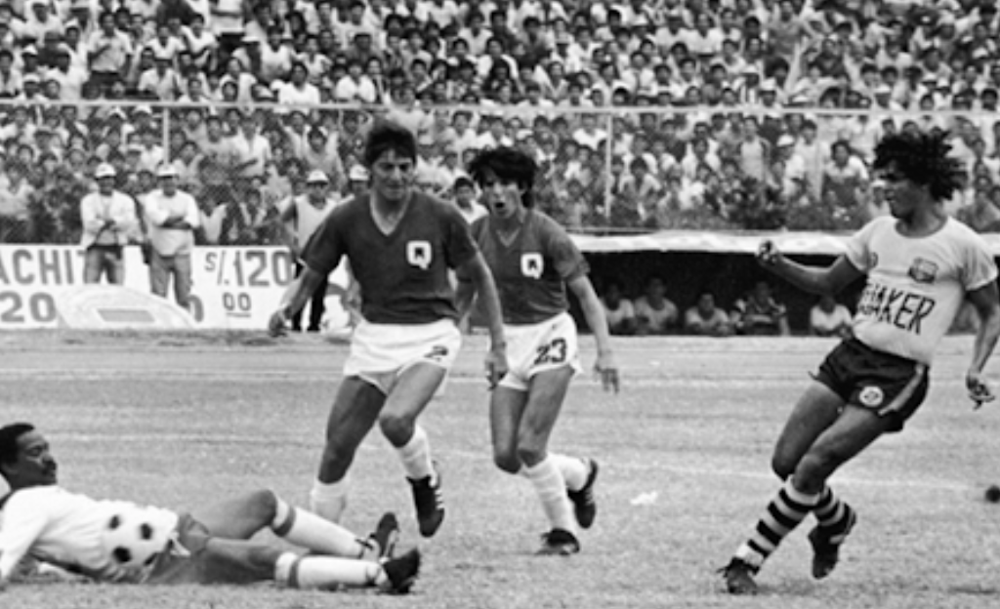

LOS FUTBOLISTAS MAS RECONOCIDOS
El mundo del fútbol ha sido testigo de la presencia de jugadores extraordinarios, cuyas habilidades, dedicación y logros los han catapultado a la cima del reconocimiento mundial. Estos futbolistas destacados no solo han dejado una huella imborrable en el terreno de juego, sino que también han alcanzado un estatus icónico que va más allá de las fronteras del deporte.

SOBRE ESTADIOS Y EVOLUCION
El mundo del fútbol ha sido testigo de la presencia de jugadores extraordinarios, cuyas habilidades, dedicación y logros los han catapultado a la cima del reconocimiento mundial. Estos futbolistas destacados no solo han dejado una huella imborrable en el terreno de juego, sino que también han alcanzado un estatus icónico que va más allá de las fronteras del deporte.

LA HISTORIA DE FUTBOL
La historia de los estadios de fútbol es tan rica y diversa como el propio deporte. Desde modestas instalaciones locales hasta majestuosos colosos que albergan a multitudes, la evolución de los estadios ha sido un reflejo del crecimiento y la globalización del fútbol a lo largo del tiempo.

NOTICIAS
Las noticias del fútbol son una ventana dinámica que nos permite acceder a los eventos más recientes, emocionantes y a veces controvertidos que rodean al apasionante mundo de este deporte. Ya sea a nivel nacional o internacional, el ámbito del fútbol está constantemente en movimiento, ofreciendo historias intrigantes y reveladoras que capturan la atención de millones de aficionados en todo el mundo.